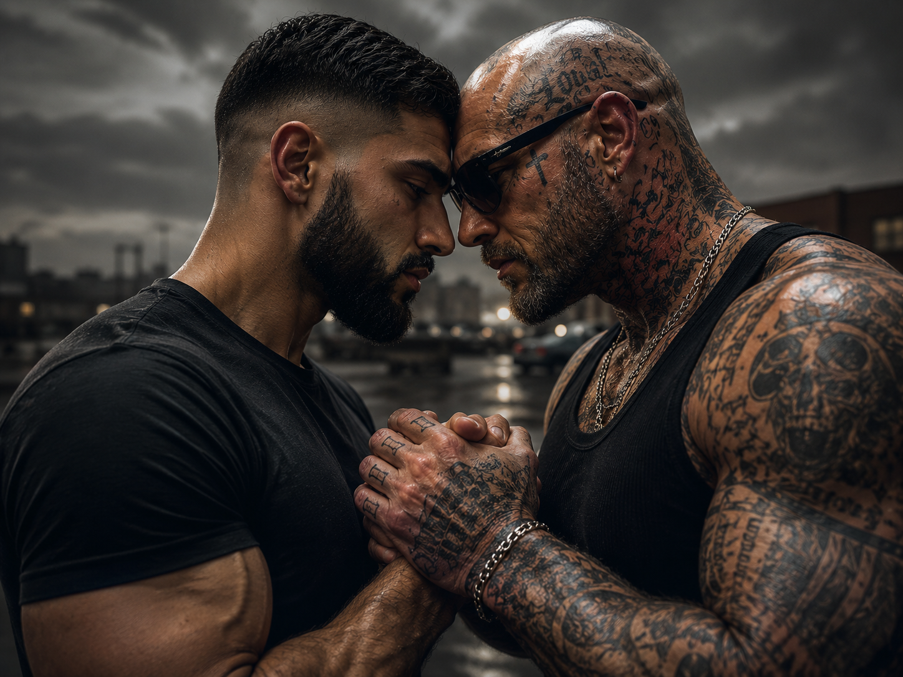
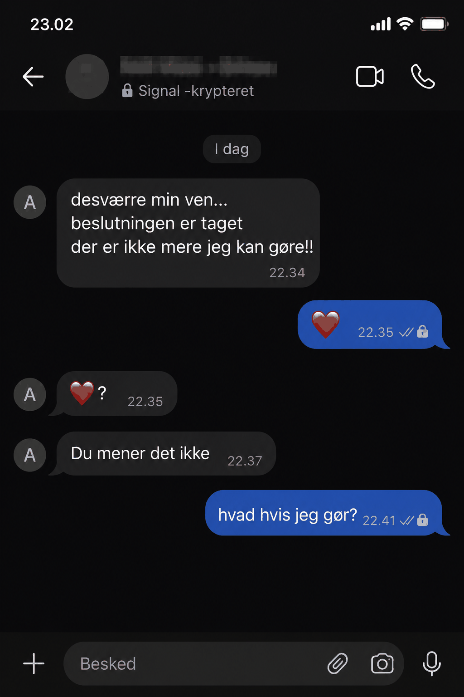

Det begyndte som en standard territorial konflikt.
To rivaliserende grupperinger havde i måneder udvekslet krypterede trusler under en forhandling.
Indtil nogen sendte en hjerte-emoji.
Det var angiveligt en fejl. En tommelfinger der ramte forkert. Men modtageren svarede ikke med den forventede trussel.
Han svarede med et hjerte tilbage.
Og et spørgsmålstegn.
Og derefter:
Og derefter:

Det var ikke politiet, men Grindr, der var skyld i afsløringen.
Grindr blev i 2021 idømt 65 millioner norske kroner i bøde af det norske datatilsyn for ulovligt salg af brugernes seksuelle orientering og lokationsdata til tredjeparter.
Appen har altså en dokumenteret tradition for at lække præcis den slags oplysninger, der kan ødelægge en karriere i en branche, hvor maskulinitet fungerer som primær valuta.
Internt har sagen splittet miljøet.
Sådan fortæller en anonym kilde til Bande Bladet.
Det interessante er, at konflikten mellem de to grupperinger efterfølgende faldt til ro.
Ikke på grund af en fredsaftale.
Ikke på grund af politiindsats.
Men fordi to mennesker udvekslede nøgenbilleder i stedet for trusler.
I bandemiljøet forventes mænd stadig at være hårde, utilgængelige og territoriale.
Følelser er svaghed.
Empati er for folk der ikke har smagt gadens vrede.
Men de fleste eskalerede konflikter starter sandsynligvis med en krænkelse, der aldrig blev talt ordentligt igennem.
Den ekskluderede bandeprofil har ikke udtalt sig offentligt.
Men kilder fortæller, at han har fået lov til at leve sit liv uden konsekvenser, netop fordi der har været forståelse for den anderledes seksualitet som en: